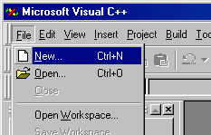
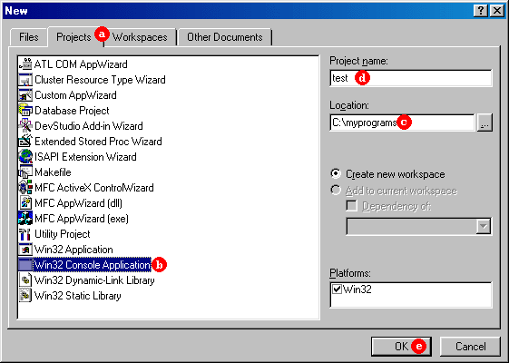
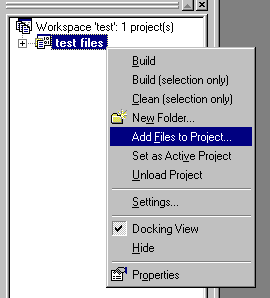
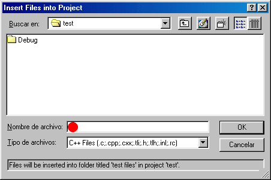

|
Compilers Console application projects with Microsoft Visual C++ |

|
|
| |
|
Compilers Console application projects with Microsoft Visual C++ |
|
|
| |
The most recent versions of this compiler are integrated in a development environment called Microsoft Visual Studio. The simplest method to create applications in this environment is by creating projects. We are going to create a project with the name test but you can simply follow these same instructions for any other project name just by changing any appearance of test by the name you choose.
|
1. Launch the Microsoft Visual C++ environment. If your development environment starts empty press on File and New...  |
|
2. A dialog box called New will appear, similar to the following one: |
|  |
Follow these steps:a. Select the Projects tab.If you are using version 6 of the development environment, a dialog box will appear asking what type of application you wish, in that case answer "An empty project" and click Finish. It will probably appear a summarizing panel. Ok.
3. At this point you shall have an empty project and in the left side it should
appear a list of classes, that because we have still not begun a program it will be empty. |
|
4.  In FileView you should be able to see a group icon called test files (replacing test by the name that you gave to the project in step 2d.). Right click on it and select the option Add Files to Project... |
|
5.
A Dialog box called "Insert Files into Project" will be opened. It is a
common exploring dialog box opened by the directory in which we have placed the project
in step 2..  Using this dialog box we can include the files we need in the project writing its name in the "File name:" field. For example we could include the file test.cpp (it is a generalized custom to call the main file of the project like the project itself plus the .cpp extension). Because it will probably be a new file, the environment will warn us that the file does not still exist and it will ask us if we want to refer it anyway. We will answer Yes.
6.
Once we have included our file(s) in the project, these would have to be visible under
the test files group (replacing test by the name you gave to the
project in step 2d.). |
|
Now we can edit any of our project's files in the way we want. |
If our code is correct and everything goes well, the resulting program will be executed. If not everithing has gone perfect, errors and warnings may be displayed, in this case, at the bottom side of the development interface it will be a frame that will display the quantity of errors and warnings. If you scroll up this screen (or if you expand it) you will be able to see the details of errors and warnings following this format:
File name(line number) : error/warning code: descriptionlike for example:
C:\myprograms\test.cpp(9) : error C2065: 'trox' : undeclared identifierIf you double-click on anyone of these lines, the place in the source code where presumably the expression that causes the error is will be signaled. Use this location and the error description to correct it.
Once your program has been executed for the first time using this method an executable file with .EXE extension will be generated, it will be in the working folder for this project within subfolder Debug or Release, according to the active configuration for the project (Build | Set Activate Configuration...).
It is recommendable that you use the options Open Workspace..., Save Workspace and Close Workspace of the File menu when you want to open an existing project or when you want to close the project that you are editing to open another one.
For more information consult help.
| Microsoft and Visual C++ are registered trademarks of Microsoft Corporation |
| ©The C++ Resources Network, 2000 - All rights reserved |
 Return back Return back |